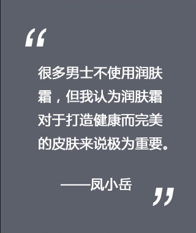

模特
Za男士系列全球模特
凤小岳
国际演员
生日：1988/3/10
电影作品
小时代(2013)男朋友女朋友(2012)艋舺(2010)
九降风(2008)
"优雅而充满活力"
的男士风尚
凤小岳访问
问题1Za男士系列产品中你最喜欢的产品是什么？我喜欢极致焕活激爽磨砂膏，因为他清洁力很强，里面的矿物泥成分可以吸收油脂并柔和摩擦面部以深层清洁毛孔，用这款洁面乳洗脸后我港澳非常火里清新。
问题2你的日常护肤步骤是怎样？我的护肤步骤很简单，只有两步。首先用洁面乳洗脸，然后用润肤霜 ，早晚两次。很多男士不使用润肤霜 ，但我认为润肤霜对于打造健康而完美的皮肤来说极为重要。
我推荐Za润肤霜，因为他是啫喱质地，不黏腻，能够24小时保湿 ， 其中含有活性成分可解决各种肌肤问题。
我会根据季节和当日活动来选则护肤产品，夏天，我喜欢使哑光系列来控油，并在外出使用美白系列润肤霜，因为该系列能够完美防晒。冬天，我喜欢使用滋润系列，因为冬天我的皮肤会干燥缺水。
点击下方以了解更多有关Za全球 模特凤小岳的信息


全球ZA男士 / 中国 / 台湾 / 泰国
沪ICP备1020387 ©2017. By Za All Right Reserved.